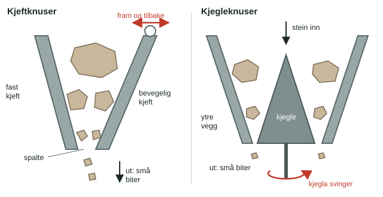
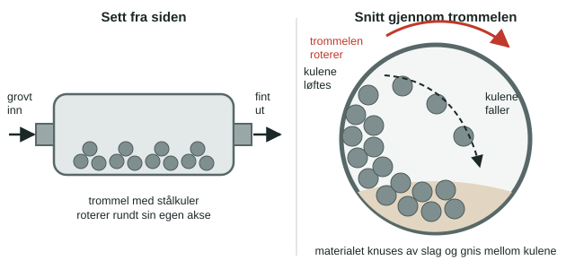

Knusing og maling
Mange råstoffer kommer til fabrikken som store klumper: malm, kalkstein, kvarts eller kull. Før de kan brukes, må de ofte deles opp i mindre biter. Det kalles knusing og maling, og det er gjerne den første enhetsoperasjonen i et anlegg som tar imot fast råstoff.
Hvorfor gjøre bitene mindre?
Det er tre hovedgrunner til at vi knuser og maler:
- Større overflate. En reaksjon, en oppløsning eller en tørking skjer på overflaten av bitene. Små biter har til sammen mye større overflate enn én stor klump. Derfor går prosessen raskere.
- Frigjøre det verdifulle. I malm sitter metallet i små korn inne i stein uten verdi. Steinen må males så fint at kornene løsner fra hverandre. Først da kan vi skille dem.
- Riktig størrelse til neste trinn. En ovn, en reaktor eller et transportbånd tåler bare biter innenfor en viss størrelse. Bitene skal verken være for store eller for små.
Tenk deg en terning med sider på 1 cm. Den har seks flater på 1 cm² hver, altså 6 cm² overflate.
Del den opp i små terninger med sider på 1 mm. Da får du 10 · 10 · 10 = 1000 små terninger. Hver av dem har overflaten 6 · 0,01 cm² = 0,06 cm².
Til sammen: 1000 · 0,06 cm² = 60 cm².
Svar: Mengden stoff er den samme, men overflaten er blitt 10 ganger så stor. Gjør du bitene 10 ganger mindre, blir overflaten 10 ganger større.
Knusing og maling: fra grovt til fint
Knusing deler store klumper i grove biter, fra steiner på størrelse med en fotball ned til noen centimeter. Maling gjør bitene enda mindre, ned til sand eller fint pulver. På engelsk kalles maling grinding, og ordet har ingenting med maling av vegger å gjøre.
Vi knuser i flere trinn etter hverandre. Én maskin klarer ikke å gjøre en stor stein om til pulver. Dessuten bruker maling mye energi, og jo finere vi maler, desto mer energi går med. Derfor maler vi aldri finere enn vi trenger.
Maskinene bryter stoffet på tre måter:
- trykk: biten klemmes mellom to harde flater til den sprekker
- slag: biten blir truffet hardt, for eksempel av en hammer eller en kule som faller
- gnidning: bitene gnis mot hverandre eller mot en flate og slites ned til fint stoff
Knusere

En kjeftknuser har to kraftige stålplater, kalt kjefter, som står som en V. Den ene kjeften står fast. Den andre beveger seg fram og tilbake, drevet av en motor. Når kjeftene går mot hverandre, blir steinen klemt og sprekker. Når de går fra hverandre, faller bitene litt lenger ned. Til slutt er bitene så små at de faller ut gjennom åpningen i bunnen, som kalles spalten. Bredden på spalten bestemmer hvor store bitene blir. Kjeftknuseren brukes ofte som første trinn, til grovknusing.
En kjegleknuser har en kjegle av stål inne i en trakt. Kjegla svinger rundt, slik at åpningen mellom kjegla og veggen blir smalere og bredere hele veien rundt. Steinen blir klemt på samme måte som i kjeftknuseren. Kjegleknuseren gir mindre biter og brukes ofte etter kjeftknuseren.
En hammermølle har hammere som sitter på en aksel som roterer veldig fort. Hammerne slår bitene i stykker mot en plate. Under hammerne sitter et gitter, og bitene slipper ut når de er små nok til å passere hullene. Hammermølla passer best for stoffer som ikke er så harde, for eksempel kalkstein, kull, korn og treflis.
Kulemølle

En kulemølle er en stor, liggende trommel som er delvis fylt med stålkuler. Trommelen roterer. Kulene blir dratt med opp langs veggen og faller ned igjen. Stoffet blir både slått i stykker av kulene som faller, og gnidd ned mellom kulene. Kulemølla brukes til finmaling, og den kan gjøre stoffet til et fint pulver.
Grovt stoff går inn i den ene enden av trommelen, og fint stoff kommer ut i den andre. Jo lenger stoffet er inne i mølla, desto finere blir det.
Mølla kan gå tørr, eller våt med vann tilsatt. Ved våtmaling kommer stoffet ut som et slam, det vil si væske med faste partikler i. Våtmaling gir lite støv, og slammet er lett å pumpe videre. Senere i emnet ser du hvordan vannet skilles fra igjen, med sedimentering og filtrering.
Knusing i en krets
Fra en knuser eller mølle kommer det alltid en blanding av store og små biter. Derfor går stoffet ofte videre til en sikt, som skiller bitene etter størrelse. Bitene som er små nok, går videre i prosessen. Bitene som er for store, sendes tilbake til knuseren og knuses en gang til. Dette kalles en lukket krets. Sikting er neste side i dette emnet.
Når noe sendes tilbake og går en runde til, kalles det resirkulering. Hvordan du regner på mengdene i en slik krets, lærer du på siden Resirkulering og utbytte i Fysiske prinsipper.
- Klemfare: Knusere og møller har store krefter og bevegelige deler. Stikk aldri hånd eller verktøy inn i en knuser som går. En knuser som har stoppet fordi den er tett, kan starte igjen. Før du jobber på maskinen, skal den stoppes og sikres med lås og merk.
- Støv: Knusing og tørrmaling lager mye støv. Støv fra stein som inneholder kvarts, kan gi alvorlig lungesykdom (silikose). Bruk åndedrettsvern når prosedyren krever det. Støvet fjernes med avsug, og det lærer du mer om på siden om syklon og støvfilter.
- Støy: Knusere og kulemøller lager kraftig støy. Bruk hørselvern. Les mer på siden Støy og hørsel.
- Steinsprut: Biter kan slynges ut fra knuseren. Bruk vernebriller og hjelm.
Stein er hardt, så kjefter, hammere, kuler og foringer i mølla slites ned og må byttes jevnlig. Hvordan vedlikehold planlegges, lærer du i Drift og vedlikehold.
Test deg selv
1. Du deler en stein i biter som er 10 ganger mindre. Hva skjer med den samlede overflaten?
- Den blir den samme, for mengden stein er den samme.
- Den blir omtrent 10 ganger større.
- Den blir 10 ganger mindre.
Mengden stoff er den samme, men alle de nye bruddflatene gir mer overflate. Når bitene blir 10 ganger mindre, blir overflaten 10 ganger større. Derfor går reaksjoner og oppløsning raskere med små biter.
2. Hva bestemmer hvor store bitene blir som kommer ut av en kjeftknuser?
- Hvor fort motoren går
- Hvor store steinene er når de kommer inn
- Hvor bred spalten i bunnen er
Bitene faller ut først når de er små nok til å passere spalten mellom kjeftene i bunnen. En smalere spalte gir mindre biter.
3. Hvordan blir stoffet knust i en kulemølle?
- Det blir klemt mellom to stålplater.
- Det blir slått av kuler som faller, og gnidd mellom kulene.
- Det blir kuttet av roterende kniver.
Trommelen roterer og drar kulene med opp langs veggen. Kulene faller ned og slår stoffet i stykker, og stoffet gnis mellom kulene. Å klemme mellom plater er det en kjeftknuser gjør.
4. Hvorfor knuser vi i flere trinn, og hvorfor maler vi ikke finere enn nødvendig?
- Fordi fint pulver alltid er farlig
- Fordi én maskin ikke klarer hele jobben, og finmaling bruker mye energi
- Fordi store biter gir større overflate
En stor stein kan ikke gjøres om til pulver i én maskin. Hvert trinn tar bitene et stykke ned i størrelse. Jo finere vi maler, desto mer energi trengs, så vi maler bare så fint som neste trinn trenger.
5. Fra knuseren kommer det både store og små biter. Hva gjør vi med bitene som er for store i en lukket krets?
- Vi kaster dem.
- Vi sender dem videre i prosessen likevel.
- Vi skiller dem ut med en sikt og sender dem tilbake til knuseren.
I en lukket krets skiller sikten ut bitene som er for store, og de går tilbake og knuses på nytt. Bare bitene som er små nok, går videre.
Ordliste
| Begrep | Forklaring | Engelsk |
|---|---|---|
| knusing | Å dele store klumper av fast stoff i grove biter, ned til noen centimeter. | crushing |
| maling | Å gjøre faste biter om til veldig små partikler, som sand eller fint pulver. | grinding, milling |
| kjeftknuser | En knuser med to stålplater som står som en V. Den ene beveger seg fram og tilbake og klemmer steinen i stykker. | jaw crusher |
| kjegleknuser | En knuser der en kjegle svinger rundt inne i en trakt av stål og klemmer steinen i stykker. | cone crusher |
| hammermølle | En mølle med hammere på en aksel som roterer fort og slår stoffet i stykker. | hammer mill |
| kulemølle | En roterende trommel med stålkuler. Kulene slår og gnir stoffet til fint pulver. | ball mill |
| spalte | Den smaleste åpningen i bunnen av en knuser. Bredden bestemmer hvor store bitene blir. | gap, setting |
| slam | En væske med faste partikler blandet i. | slurry |
| lukket krets | Når stoff som er for grovt, skilles ut og sendes tilbake til knuseren eller mølla for å knuses på nytt. | closed circuit |
Les mer
- Resirkulering og utbytte (Fysiske prinsipper): regning på stoff som går i krets.
- Energi, arbeid og effekt (Fysiske prinsipper): hva effekten til en motor betyr.
Om kildene: Teksten, eksemplene og figurene på denne siden er laget for dette nettstedet. Siden bygger på undervisningsopplegg i kjemiprosess- og laboratoriefag ved Sauda vgs, som er utarbeidet med utgangspunkt i blant annet Kjemien stemmer, Laboranten og åpne nettkilder.